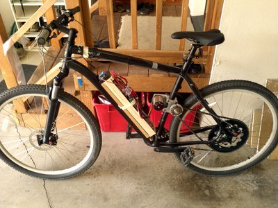
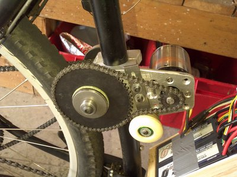
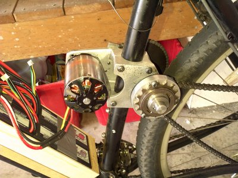

I converted my mountain bike to run off an electric outrunner motor designed for large model airplanes using a kit from a guy (username: thud) on the endless-sphere forum.
Specs
Motor: Aeolian 6374 170Kv motor
Batteries: 6x 4S 5000mAh hardcase packs for 12S, 10Ah total

Ready to ride!

Primary #25 chain reduction. The motor mount clamps tightly to the seat tube.

Final #35 chain drive. The outside sprocket that you can see is a single speed freehweel for a bmx bike that enables the bike to coast without spinning the motor.